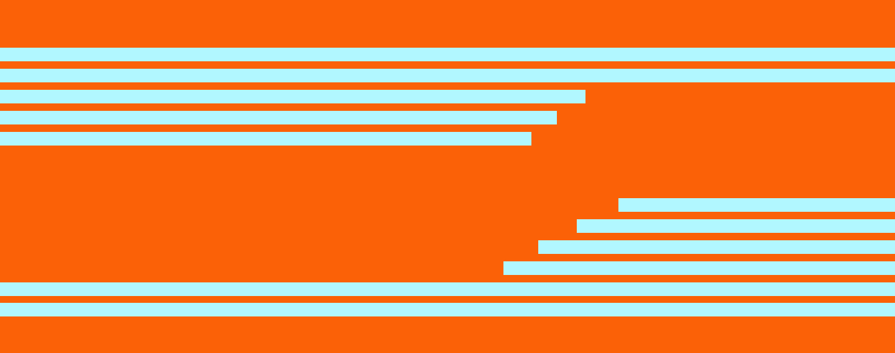

МЕЛОДИЯ КРЫЛЬЕВ
вокальная школа для птиц
О НАС

Наша школа — это безопасное пространство, где нет места насмешкам, а
есть только поддержка, терпение и вера в успех каждого ученика.
Мы помогаем раскрыть природный потенциал, обрести уверенность в себе и
превратить простое чириканье в настоящую музыку крыльев и сердца.
НАША МИССИЯ
Неважно, родились ли вы соловьём или ваше пение пока больше похоже на
весёлую разминку для связок. Внутри вас живёт уникальная мелодия,
которая заслуживает того, чтобы прозвучать.
Наша миссия — дарить голос тем, кто хочет быть услышанным. Мы уверены:
пение — это не привилегия избранных, а язык души, доступный каждой
птице.
ЧАСТЫЕ ВОПРОСЫ
Правда ли вы учите петь абсолютно любых птиц?
А если у меня совсем-совсем нет слуха?
Как проходят занятия?
Вы учите только классическому пению?
Да, и мы говорим это с полной ответственностью
Мы уверены, что «совсем-совсем» не бывает!
В уютных классах один на один с педагогом или в мини-группах.
Мы поможем вам освоить ту музыку, которая откликается в вашем сердце.
НАШ МЕРЧ

Звук твоего пути.
Ваша звуковая летопись от первой ноты до виртуозной трели. Услышьте, как
рос ваш голос.

Голос твоей стаи
Коллекция лучших мелодий вашего выпуска. Ваш голос в гармонии с хором
талантливых птиц.

Ваш виниловый диплом
Каждый выпускник получает эту пластинку с своей лучшей мелодией
бесплатно. Наш главный подарок и ваше звучащее достижение.

Скамина Арина Б25УКИ02
Кураторы: Рихтер Камила, Аракелян Нона, Латышев Артем